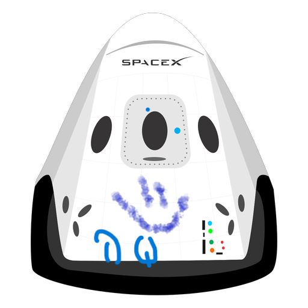

Hyperblog
Tu blog de cabecera
Este es el título atractivo e interesante del post
Y este es el parráfo de inicio donde vamos a explicar las cosas increíbles que se pueden hacer con ramas
Esta es una imagen de un hermoso lago en canda. Es insertada desde un servidor gratuito de internet llamado imgur

Los blogs son la mejor forma de compartir información y tus ideas. Mucho mas que ir a conferencias o salir en Youtube. Excepto si eres un rockstar. Pero estadísticamente no lo eres.... por ahora.
A continuación se muestra una imagen local de la bella ciudad de Vancuver Canadá

Suscribete y dale like